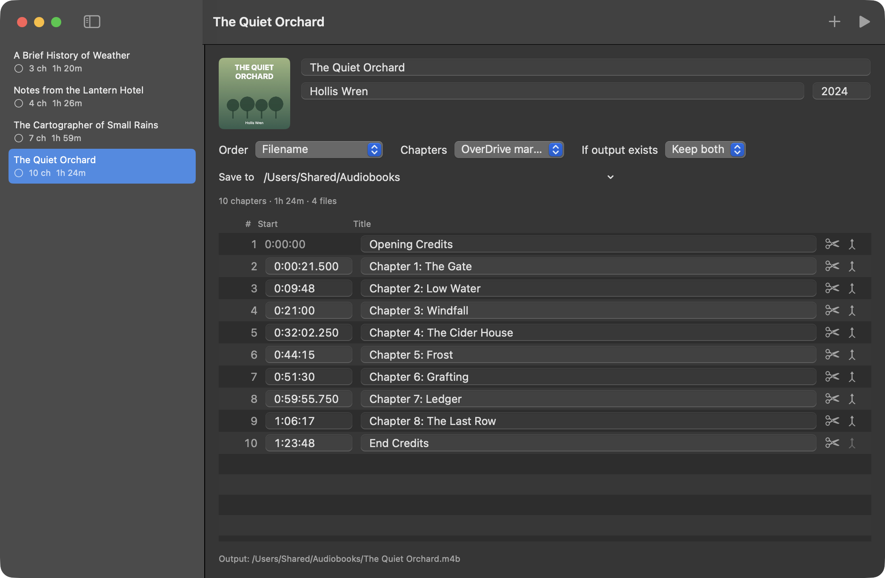

M4B Converter
Turn folders of MP3s into chaptered audiobooks. A free Mac app.
Version 1.0, signed and notarized by Apple. For Apple silicon Macs on macOS 14 or later. Needs ffmpeg. Free and open source under the MIT license.

Contents
- Converts in batches
A folder of MP3s is one book. A folder of folders is several, and three convert at a time.
- Makes real chapters
From OverDrive markers, one per file, or a filename pattern. Rename, retime, split or merge any of them before converting.
- Fills in the details
Title, author and year come from the MP3 tags, and the cover from an image in the folder. Fix anything before it's written.
- Checks every file it makes
Each .m4b is measured again afterwards. A book isn't marked done unless its chapters and length match the plan.
- Audits the books you have
Point it at existing .m4b files to find ones that are cut short or damaged.
Getting started
- Download the zip, open it, and drag M4B Converter into Applications.
- Install ffmpeg, which does the encoding. With Homebrew:
brew install ffmpeg - Open the app and drop a folder of MP3s on the window. Check the chapters, then press Convert All (the play button).
Questions
- Where do the finished files go?
- Next to the folder each book came from, unless you pick one folder for everything in Settings.
- Will it delete my MP3s?
- No. After a book converts and checks out, you can choose to move its MP3 folder to the Trash. It always asks first, and it never deletes anything outright.
- Does it need the internet?
- No. It has no account, no tracking, and makes no network connections.
If it saved you an evening of fiddling with chapter files, you can buy me a coffee.
Tip on Ko-fi